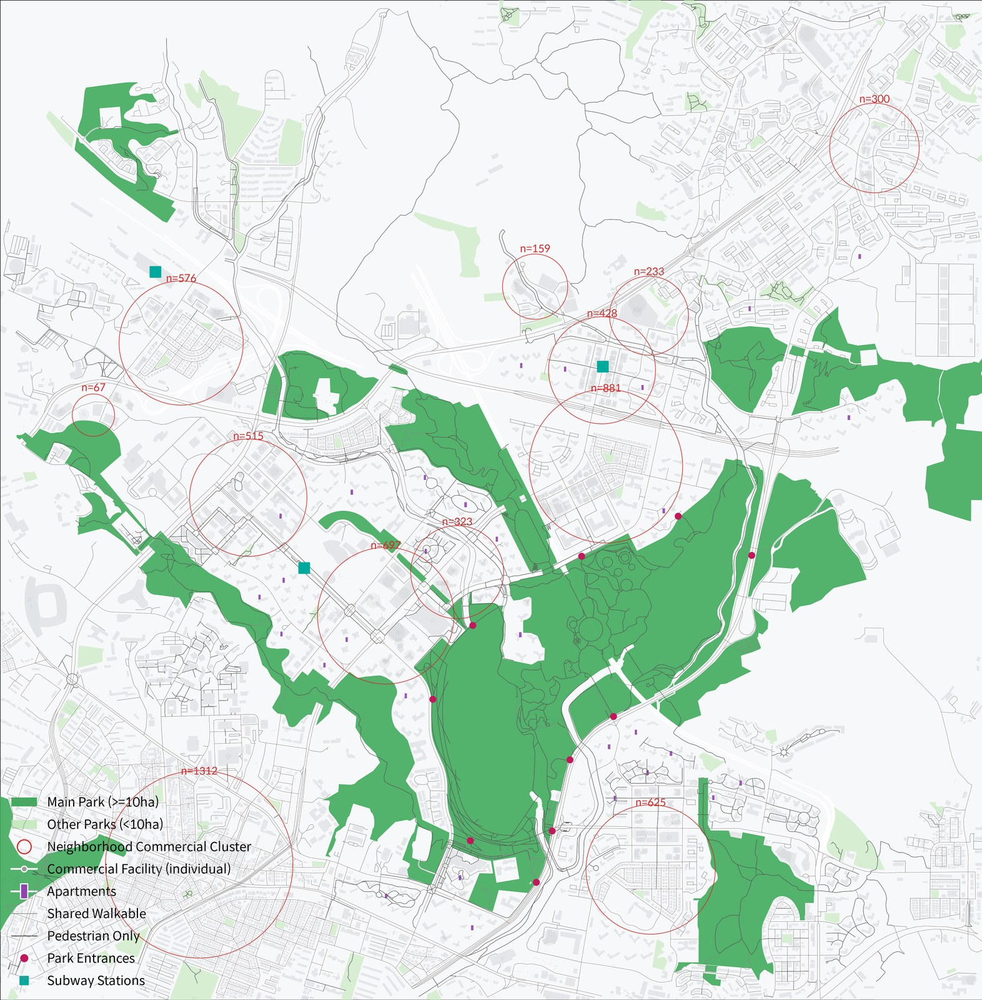
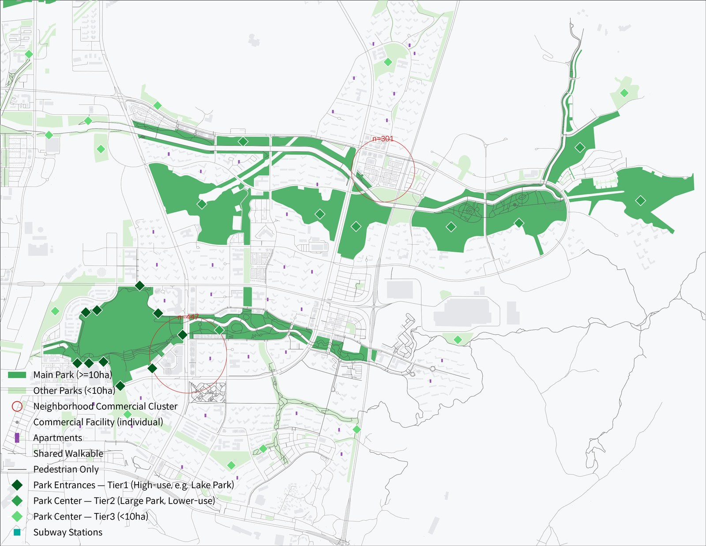
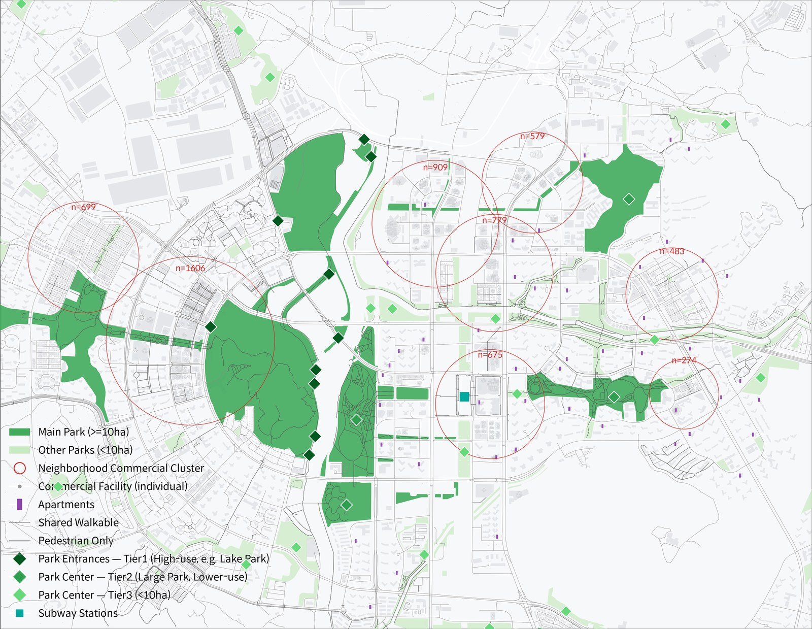
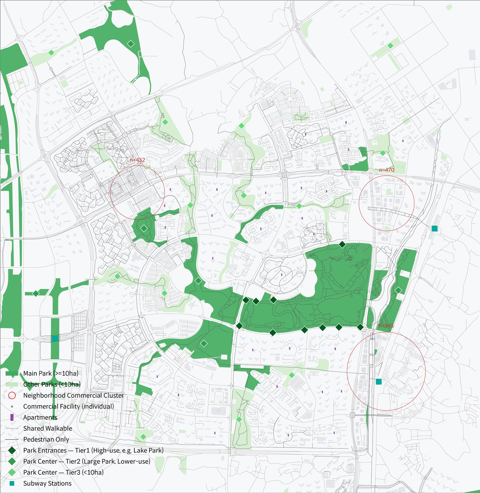

Urban Economics · New Town Comparison
신도시 아파트 가격 결정요인 비교연구
광교 · 동탄남부 · 동탄북부 · 운정 4개 지역의 실거래 2,740건(126개 단지)을 대상으로, 공원 접근성이 아파트 가격에 자본화되는 정도를 헤도닉 회귀와 공간계량모형(Moran's I, SAR/SEM)으로 검증했습니다. 동탄2는 남/북이 서로 이질적인 지역임이 확인되어 별개 지역으로 분리 추정했습니다. 아래 지도에서 지역별 공원 · 상권 클러스터 구조를 확인할 수 있습니다.
전체 통계분석 결과(기초통계 · 헤도닉 회귀 · 공간계량모형 · 공원 데이터 구축 방법론)는 연구 페이지 본문에서 확인하세요.
01 – 04
지역별 공원 · 상권 클러스터 지도
광교
Gwanggyo

동탄남부
Dongtan South

동탄북부
Dongtan North

운정
Unjeong
